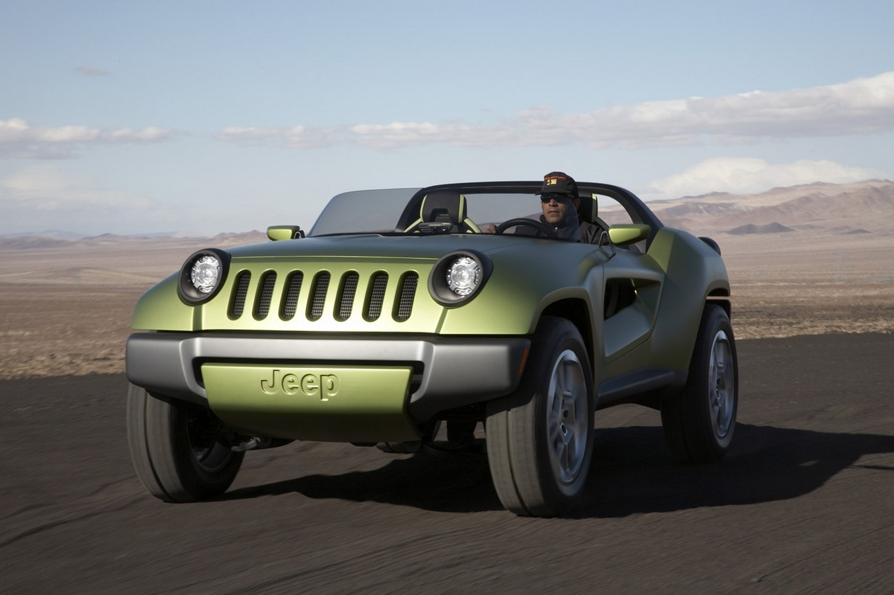
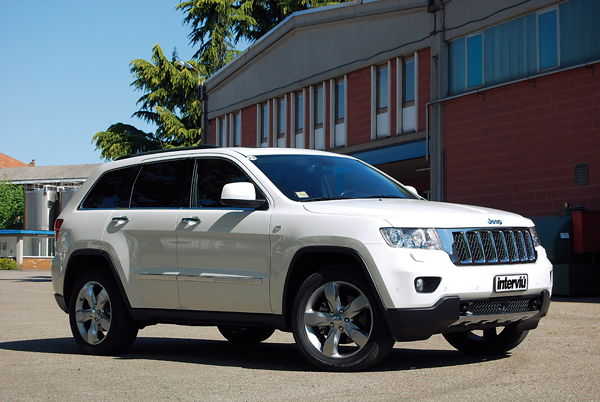
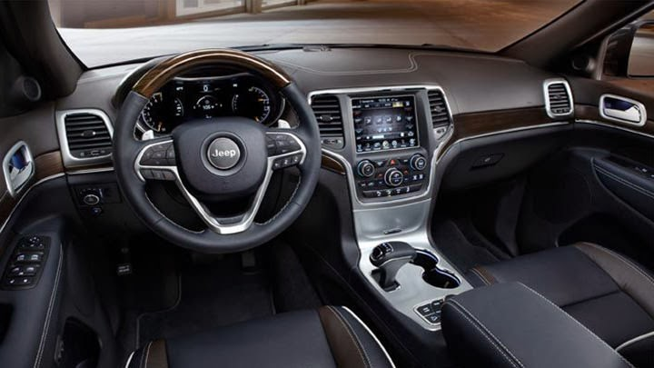
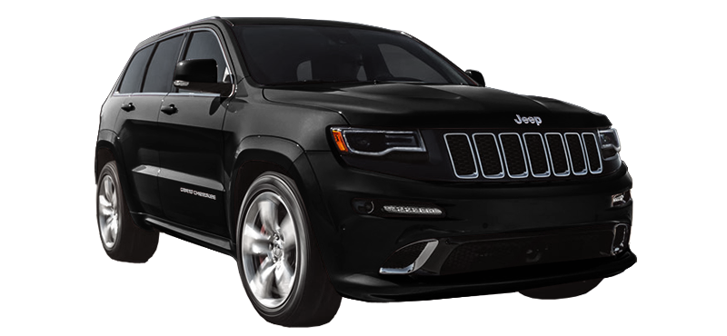
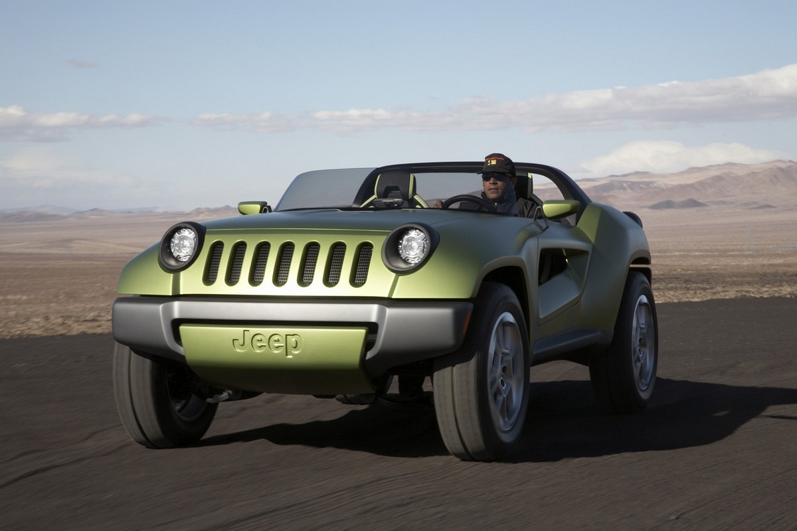
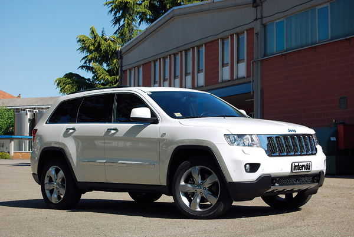
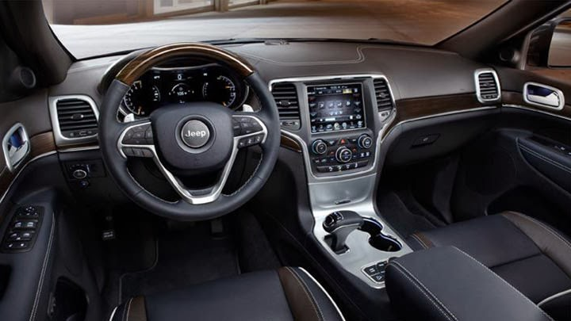
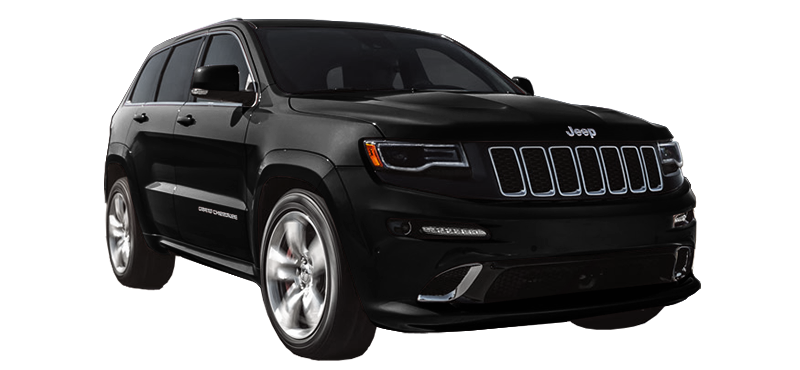

Lujos
Mostrar Menú
vibrar

El Grand Cherokee WK se mantiene aún como un modelo lujoso del segmento del que Jeep es prácticamente un miembro único de Off-Road SUV, es decir, de vehículos utilitarios todo terreno. A pesar de que existen otras marcas que ofrecen vehículos similares, Jeep ha mantenido estas propiedades en todos sus vehículos a precios de gamas medias, consolidándose como una marca muy popular y reconocida de vehículos todo terreno. Se comercializa con los motores PowerTech V6 de 3.7L, PowerTech V8 4.7L FlexFuel, que puede funcionar con gasolina y etanol, un HEMI V8 5.7L de altas prestaciones y con desconexión automática de la mitad de los cilindros para disminuir el consumo; y un turbodiésel V6 3.0L de origen Mercedes-Benz, famoso por ser uno de los motores diésel más eficientes que se hayan producido gracias a su sistema de inyección common-rail de última generación. El Grand Cherokee también está disponible en la versión especial SRT-8, propulsado por un HEMI V8 de 6.1L de 428cv, lo que le permite competir en prestaciones con modelos como el Mercedes-Benz ML63 AMG (510cv), Porsche Cayenne Turbo (500cv) y Turbo S (550cv) o el Volkswagen Touareg W12 (450cv).

También la reciente introducción de los modelos Compass y Patriot que comparten la misma plataforma MK y un sistema de transmisión completamente nuevo para el segmento (CVT: Continously Variable Transaxle, que consta de poleas de diámetro automáticamente variable) que han reducido los costos al consumidor y crean un nuevo segmento para clientes menos exigentes con automóviles de costos más bajos y de operación más sencilla. A diferencia de muchos de sus hermanos de línea contemporáneos, estos Jeep no llevan caja reductora ya que sus sistemas de tracción en las cuatro ruedas funciona de forma diferente para distribuir la fuerza a los dos ejes, sin embargo el Jeep Patriot ha demostrado ser un vehículo muy ágil y versátil, y según la compañía la versión Limited puede cruzar senderos mojados de hasta 19 pulgadas de profundidad. Ambos vehículos están equipados con un motor de 2.0L a gasolina, o un 2.4L con tiempo de válvulas variable (VVT); sus transmisiones son una caja manual de cambios o la nueva transmisión automática CVT. Estos dos vehículos han resultado ser los todoterrenos menos costosos que haya producido Jeep en muchos años y la Jeep Patriot retoma, en parte, el concepto bajo el cual se lanzara la Jeep Cherokee XJ al reducir la cilindrada sin disminuir la potencia, y sin que las capacidades fuera de la carretera se vean afectadas notoriamente.

Estas camionetas fueron sucedidas por el radical Jeep Gladiator (versión pick-up de la primera Jeep Wagoneer), y se produjo hasta el año 1971. De allí surge el Jeep Honcho, una versión pick-up de la siguiente serie de Wagoneer o de las Cherokee's SJ y se mantuvo en producción hasta 1989. Posteriormente aparece el Jeep Comanche, producido entre 1986 y 1992, como versión pick-up de la Cherokee XJ.

Jeep Wrangler Estéticamente, el CJ-7 es el antepasado más cercano al Jeep Wrangler, introducido por primera vez en 1987 cuando AMC fue adquirida por la Corporación Chrysler. Este Jeep estaba propulsado por el todoterreno legendario AMC PowerTech I6 242 de 6 cilindros en línea, con 190 hp y 220 lb/ft. de torque, y desde el principio incorporó características más radicales que los modelos CJ's, al ser ofrecido con interiores más lujosos y parcialmente derivados de su contemporáneo Cherokee XJ. Sin embargo muchos fieles a la tradición de los CJ's ven en los faros rectangulares del Wrangler una pequeña pérdida de autenticidad y clasicidad, retomada en 1997 con la reforma estética del Wrangler y mantenida hoy en día por los nuevos Wrangler 2007 y la primera versión en 4 puertas de este auténtico Jeep, el Wrangler Unlimited 2007.


El Grand Cherokee WK se mantiene aún como un modelo lujoso del segmento del que Jeep es prácticamente un miembro único de Off-Road SUV, es decir, de vehículos utilitarios todo terreno. A pesar de que existen otras marcas que ofrecen vehículos similares, Jeep ha mantenido estas propiedades en todos sus vehículos a precios de gamas medias, consolidándose como una marca muy popular y reconocida de vehículos todo terreno. Se comercializa con los motores PowerTech V6 de 3.7L, PowerTech V8 4.7L FlexFuel, que puede funcionar con gasolina y etanol, un HEMI V8 5.7L de altas prestaciones y con desconexión automática de la mitad de los cilindros para disminuir el consumo; y un turbodiésel V6 3.0L de origen Mercedes-Benz, famoso por ser uno de los motores diésel más eficientes que se hayan producido gracias a su sistema de inyección common-rail de última generación. El Grand Cherokee también está disponible en la versión especial SRT-8, propulsado por un HEMI V8 de 6.1L de 428cv, lo que le permite competir en prestaciones con modelos como el Mercedes-Benz ML63 AMG (510cv), Porsche Cayenne Turbo (500cv) y Turbo S (550cv) o el Volkswagen Touareg W12 (450cv).

También la reciente introducción de los modelos Compass y Patriot que comparten la misma plataforma MK y un sistema de transmisión completamente nuevo para el segmento (CVT: Continously Variable Transaxle, que consta de poleas de diámetro automáticamente variable) que han reducido los costos al consumidor y crean un nuevo segmento para clientes menos exigentes con automóviles de costos más bajos y de operación más sencilla. A diferencia de muchos de sus hermanos de línea contemporáneos, estos Jeep no llevan caja reductora ya que sus sistemas de tracción en las cuatro ruedas funciona de forma diferente para distribuir la fuerza a los dos ejes, sin embargo el Jeep Patriot ha demostrado ser un vehículo muy ágil y versátil, y según la compañía la versión Limited puede cruzar senderos mojados de hasta 19 pulgadas de profundidad. Ambos vehículos están equipados con un motor de 2.0L a gasolina, o un 2.4L con tiempo de válvulas variable (VVT); sus transmisiones son una caja manual de cambios o la nueva transmisión automática CVT. Estos dos vehículos han resultado ser los todoterrenos menos costosos que haya producido Jeep en muchos años y la Jeep Patriot retoma, en parte, el concepto bajo el cual se lanzara la Jeep Cherokee XJ al reducir la cilindrada sin disminuir la potencia, y sin que las capacidades fuera de la carretera se vean afectadas notoriamente.

Estas camionetas fueron sucedidas por el radical Jeep Gladiator (versión pick-up de la primera Jeep Wagoneer), y se produjo hasta el año 1971. De allí surge el Jeep Honcho, una versión pick-up de la siguiente serie de Wagoneer o de las Cherokee's SJ y se mantuvo en producción hasta 1989. Posteriormente aparece el Jeep Comanche, producido entre 1986 y 1992, como versión pick-up de la Cherokee XJ.

Jeep Wrangler Estéticamente, el CJ-7 es el antepasado más cercano al Jeep Wrangler, introducido por primera vez en 1987 cuando AMC fue adquirida por la Corporación Chrysler. Este Jeep estaba propulsado por el todoterreno legendario AMC PowerTech I6 242 de 6 cilindros en línea, con 190 hp y 220 lb/ft. de torque, y desde el principio incorporó características más radicales que los modelos CJ's, al ser ofrecido con interiores más lujosos y parcialmente derivados de su contemporáneo Cherokee XJ. Sin embargo muchos fieles a la tradición de los CJ's ven en los faros rectangulares del Wrangler una pequeña pérdida de autenticidad y clasicidad, retomada en 1997 con la reforma estética del Wrangler y mantenida hoy en día por los nuevos Wrangler 2007 y la primera versión en 4 puertas de este auténtico Jeep, el Wrangler Unlimited 2007.